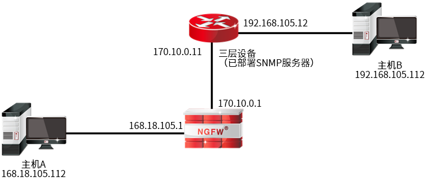
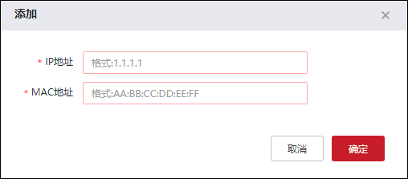
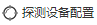
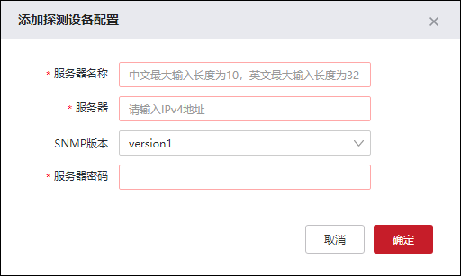
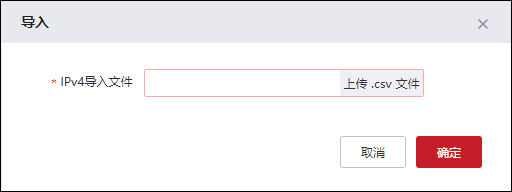

当数据包经过三层设备后，源MAC地址会被替换成出接口IP地址，防火墙无法通过传统的二层IP/MAC绑定技术实现对已跨三层设备的主机进行MAC认证。此时，如果信任IP地址被其他使用者假冒，便可穿过防火墙来访问内部网络。为解决上述问题，天融信防火墙支持跨三层IP/MAC绑定技术，将信任IP地址和网卡的硬件地址绑定起来，从而防止IP欺骗、地址伪装等攻击行为，有效地避免信任IP地址被其他使用者假冒。
跨三层IP-MAC绑定方式主要用于绑定一些重要管理员IP和特权IP。需要注意的是，使用该功能需要在源IP主机连接的三层设备中启用SNMP服务器功能，NGFW通过SNMP获取该三层设备的ARP列表，网络拓扑图如下图所示。
跨三层对信任主机MAC地址进行认证的原理如下：
前提条件：与源IP主机直接连接的三层设备部署SNMP服务器，NGFW配置L3IP/MAC表，并且NGFW需配置探测三层设备ARP列表相关配置。
1）当主机B通过三层设备的IP报文通过防火墙时，防火墙会根据该IP报文的源IP地址在自己的IP/MAC绑定列表中查找这个IP地址。
2）如果该IP存在，查找该IP地址对应的MAC地址，然后将该IP和MAC地址映射关系与通过SNMP探测到的三层设备的ARP列表进行匹配，如果该IP和MAC地址映射关系匹配三层设备ARP列表中某IP/MAC映射条目，则表明信任主机MAC认证通过，允许报文通过，否则不允许通过。

配置跨三层IP-MAC绑定的具体操作如下：
| 步骤1 | 选择 。 |
| 步骤2 | 添加IP-MAC地址绑定策略。 |
1）点击“ ”，弹出“添加”窗口，如下图所示。
”，弹出“添加”窗口，如下图所示。

在添加IP-MAC绑定时，各项参数的具体说明如下表所示。
参数 |
说明 |
|---|---|
IP地址 |
必填项，设置地址绑定关系中的IP地址。 当IP地址是目的IP地址时，主要指受保护的主机IP地址；当IP地址是源IP地址时，主要指发起连接的（可能是攻击）的主机IP地址，而且可能是虚假的IP地址。 多次配置同一IP地址到地址绑定关系中，后配置的表项覆盖原有表项。同一个MAC地址可以同多个不同的IP地址关联。 说明： NGFW目前只支持跨三层IPv4与MAC地址的绑定功能，暂不支持跨三层IPv6与MAC地址的绑定。 |
MAC地址 |
必填项，设置地址绑定关系中的MAC地址。 某IP地址的主机真实的MAC地址或任意指定的MAC地址。 |
2）配置完成后点击【确定】按钮。
| 步骤3 | 配置探测设备信息。 |
1）在“探测结果”框中点击“

”，在弹出的“探测设备配置”窗口中点击“添加”，如下图所示。
在设置探测设备信息时，各项参数的具体说明如下表所示。
参数 |
说明 |
|---|---|
服务器名称 |
必填项。配置SNMP服务器名称。 |
服务器 |
必填项。配置SNMP服务器所在三层设备的IP地址信息。 |
SNMP版本 |
必选项。配置SNMP服务器支持的SNMP版本，选项包括：version1、version2c、version3。 说明： 该配置需要与对端SNMP服务器的版本保持一致。 |
服务器密码 |
必填项。配置SNMP服务器的密码，当“SNMP版本”选择version1或version2c时，需要配置此项。 说明： 该配置需要与对端SNMP服务器的密码保持一致。 |
安全名称 |
必填项。设置SNMP服务器访问NGFW所使用的用户名。当“SNMP版本”选择version3时，需要配置此项。 |
安全级别 |
必选项。设置是否对SNMP管理信息进行认证和加密，当“SNMP版本”选择version3时，需要配置此项。可选项：不认证不加密、只认证不加密、认证且加密。 说明： 1）当设置不认证不加密，不对数据进行加密和认证。 2）当设置只认证不加密时，只对数据进行认证，不对数据进行加密。 3）当设置认证且加密时，同时使用加密和认证技术，先对数据进行加密，然后进行认证技术的消息摘要计算。 |
认证算法 |
安全级别选择“只认证不加密”或“认证且加密”时，该参数为必选参数。配置对SNMP管理信息使用的认证算法，支持的认证算法包括：MD5、SHA。 |
认证密码 |
安全级别选择“只认证不加密”或“认证且加密”时，该参数为必选参数。指定SNMP服务器通过SNMPV3用户账号向NGFW进行身份认证时使用的认证密码。 |
加密算法 |
安全级别选择“认证且加密”时，该参数为必选参数。配置对SNMP管理信息使用的加密算法，支持的加密算法包括：DES、AES。 |
加密密码 |
安全级别选择“认证且加密”时，该参数为必选参数。指定SNMP管理信息加密时使用的密码。 |
2）配置完成后点击【确定】按钮。
| 步骤4 | 批量导入。 |
1）点击“ ”，弹出“导入”窗口，如下图所示。
”，弹出“导入”窗口，如下图所示。

2）点击【上传 .csv文件】按钮，弹出“打开”窗口，在管理主机中选择存有IP-MAC地址的文件，点击【打开】按钮，完成文件的导入。
| 步骤5 | 导出。 |
点击“”，选择存放IP-MAC地址绑定文件的存储路径，将导出文件保存到管理主机中。
| 步骤6 | 绑定SNMP探测结果。 |
在“探测结果”界面中，选中一个SNMP服务器，再点击“绑定”，即可将SNMP服务器探测到的IP-MAC信息导出到“IP-MAC绑定列表”，实现MAC地址和IP地址批量绑定。